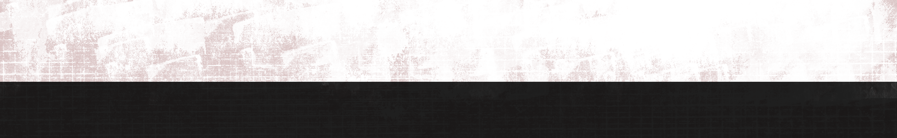
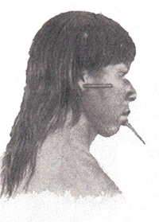
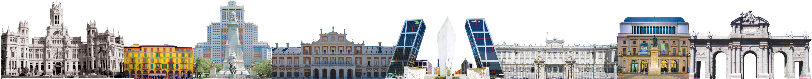
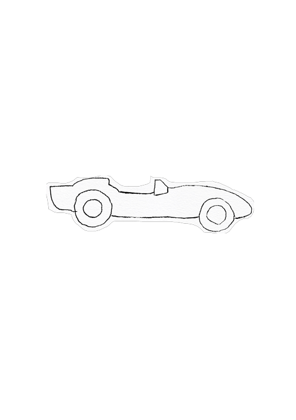

Avant 1400
Bien avant l’arrivée des colons, à l’époque précolombienne, trois grands peuples indigènes se répartissent le territoire du Venezuela : Les Arawaks, les Caribes et les Cumanagotos.
En effet, ces différents groupes ont chacun leur propre langue et possèdent une manière de vivre différente les uns des autres. Chez les Arawaks, les habitations sont construites sur des pilotis. Ce type d’habitat a inspiré les colons, qui ont surnommé ce territoire la « petite Venise», devenu aujourd’hui le Venezuela.
1498
Le Venezuela est découvert en 1498 lors du troisième voyage vers les Indes Occidentales de Christophe Colomb. En 1506, après les multiples échecs espagnols face aux amérindiens dans la région de Darién (regroupant la Colombie, le Panama et le Venezuela), l’Allemand Bartholomé Welser reçoit le droit de coloniser le Venezuela. Le pays qui appartient alors aux espagnols passe entre les mains des allemands et ce, pendant vingt-cinq ans. Toutefois, au fil des années des tensions entre ces deux pays apparaissent et en 1546, plus aucun allemand n’est le bienvenu sur le territoire. L’empire hispanique reprend les rênes de la colonisation et de l’administration du pays. Cette colonie demeure assez négligée par ses dirigeants espagnols, ces derniers se concentrant davantage sur l'extraction de l'or dans les autres régions d’Amérique du Sud plutôt que sur le bon développement du pays.
L’eldorado du cacao
Les Aztèques et les Mayas (Amérindiens) sont les premiers à confectionner « la boisson de dieu » à partir du cacao. Ils cueillent les cabosses et en extraient les fèves. Ils les laissent ensuite fermenter, sécher et griller, les épluchent et les broient sur des pierres chaudes. Ils les mélangent enfin à des farines, des sucres et des épices puis les diluent afin d’en boire le breuvage. Les trois groupes de cacaoyer du Venezuela (Criollo, Forastero et Trinitario) composent les plantations principales du pays. Au XVème siècle, le cacao a une telle importance qu’il est utilisé comme monnaie d’échange par les Mayas. Chuao, l’eldorado du cacao vénézuelien, devient la première plantation d’Amérique. Très vite, « l’or brun » s’impose comme le principal bien du Nouveau Monde vers le royaume espagnol. Jusqu’en 1810, le Venezuela couvre la moitié de la demande mondiale de cacao. A son arrivée en 1919, l’Espagnol Cortes modifie le breuvage et lance réellement la filière du chocolat dans le monde entier. Aujourd’hui, le Venezuela produit encore l’un des meilleurs cacaos du monde notamment grâce à la production du Criollo, qui est une des variétés les plus précieuses.
La jeunesse Hugo Chavez
Hugo Rafael Chávez Frías naît en 1954 à Sabaneta, au sud du Venezuela. Il entre à l’académie vénézuelienne des sciences millitaires en 1971 et en sort sous-lieutenant en 1975. Peu après, il fonde avec le soutien de deux autres officiers le mouvement bolivarien révolutionnaire (MBR) qui s’oppose à la corruption du gouvernement présidé par Carlos Andrés Pérez.
Le coup d'état
d'Hugo Chavez
En 1991, la situation du gouvernement colombien devient critique vis-à-vis des combattants de la guérilla. Des pourparlers sont engagés pour apaiser la situation. Le 3 Juin 1992, Hugo Chávez, révolté par la corruption ostensible du régime, est l’auteur d’une tentative de coup d’état avortée. Cet acte lui permet de connaître son premier grand succès médiatique. En novembre, le gouvernement fait face à une autre tentative de putsch qui laisse le pays dans un état d'extrême pauvreté.
Le 20 Mai 1993, le président Carlos Andrès Pérez qui en est à son deuxième mandat, est destitué de ses fonctions pour corruption. Cinq ans plus tard, Hugo Chávez est élu président avec 56,5% des voies contre Henrique Salas Römer.
Hugo Chavez au pouvoir
Hugo Chávez est président du Venezuela de 1999 à 2013. Sa politique et sa personnalité sont très controversées même s’il bénéficie d’un rayonnement international. Le 11 avril 2002, il fait face à un putsh mené par les groupes d’opposition et l’entrepreneur Pedro Carmona. Ce dernier envoie Hugo Chávez en prison et prend la tête du gouvernement. Mais, trois jours plus tard, l’armée et les mouvements populaires réussissent à faire avorter le coup d'état et remettent Hugo Chávez au pouvoir. Suite à ces évènements, le gouvernement d’Hugo Chávez porte plainte, en mars 2004, auprès de l'Organisation des États Américains (OEA) contre le gouvernement de Washington, persuadé de son soutien et de sa complicité avec les auteurs de la tentative de putsch. Après avoir aboli de nombreux traités commerciaux qui liaient le Venezuela et les États-Unis, Hugo Chávez creuse un peu plus l’écart entre les deux nations en décidant d’avancer l’heure du Venezuela de trente minutes, pour différer de celle des USA. Il sera président jusqu’à son décès en mars 2013.
Le Venezuela, une puissance pétrolière
Le Venezuela est une réelle puissance énergétique, et notamment pétrolière. Son économie tourne principalement autour du pétrole, mais aussi du gaz, ces secteurs représentant 25% du PIB du pays. Les réserves de pétrole du Venezuela atteindraient 297 milliards de barils ce qui le ferait accéder à la première place mondiale des puissances pétrolières, devant l’Arabie Saoudite. La production est majoritairement gérée par la compagnie publique PDVSA. Cette force de production et ces ressources naturelles font la puissance économique du Venezuela.



